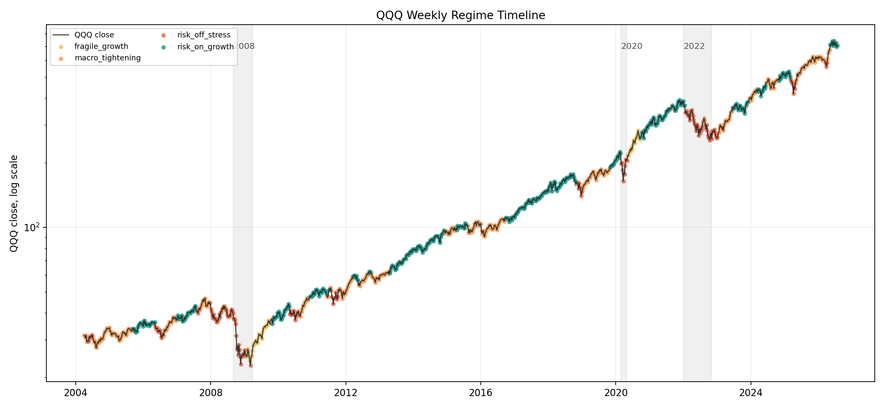
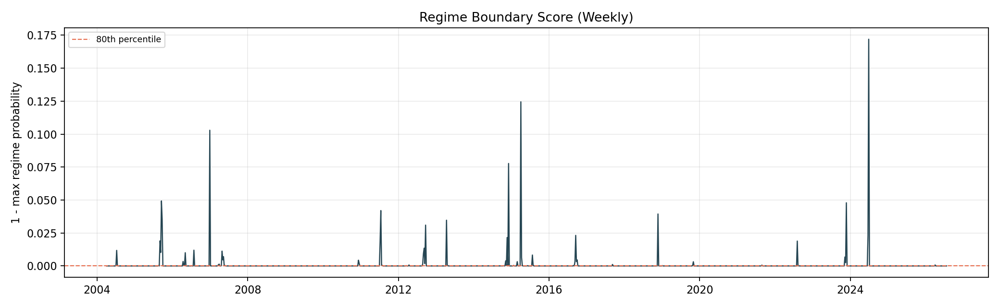
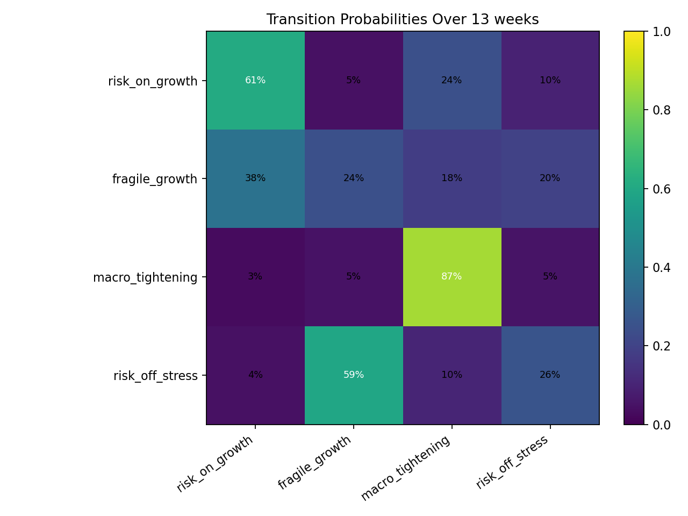
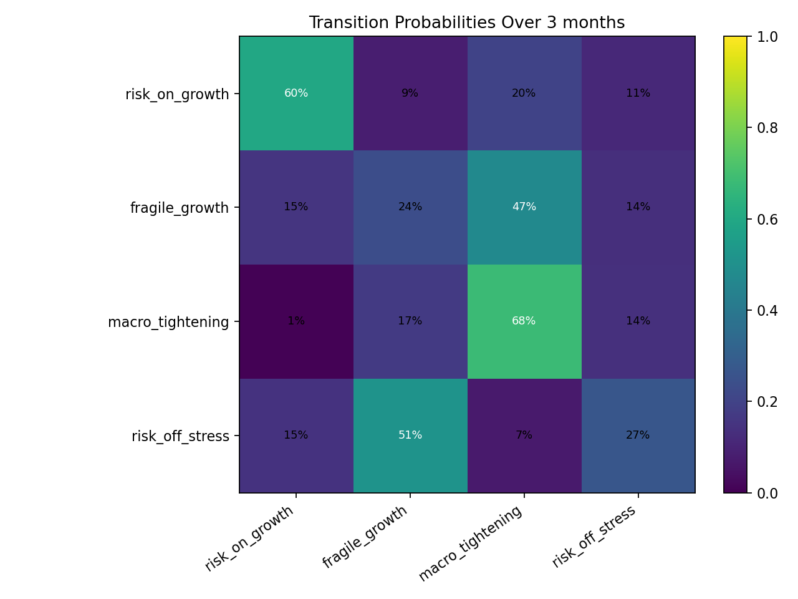

Main transition risk
36.4%
13 weeks
A descriptive dashboard for reading the current QQQ regime and the indicators that historically sat near regime changes.
As of 2026-07-22, the weekly model is deep inside its current cluster: confidence 100.0%, boundary score 0.0%, main-horizon transition risk 36.4%.
Weekly and monthly grains disagree, so treat the read as horizon-sensitive.
| Horizon | Transition | Risk-on or fragile | Tightening or stress |
|---|---|---|---|
| 1 week | 3.9% | 96.1% | 3.9% |
| 4 weeks | 12.3% | 87.7% | 12.3% |
| 13 weeks | 36.4% | 64.3% | 35.7% |
| 26 weeks | 54.3% | 49.0% | 51.0% |
This table measures stay-vs-switch similarity, not bullish-vs-bearish risk. Switch-side means the latest value is at or beyond the historical average for observations that changed regimes.
| Feature | Latest | Stay avg | Switch avg | Switch pressure | Read |
|---|---|---|---|---|---|
| BAA10Y level zmacro_credit | -0.451 | -1.121 | -0.684 | 100% | switch sideat or beyond the historical switch average |
| NDX above 200-day averagebreadth_concentration | 0.634 | 0.831 | 0.777 | 100% | switch sideat or beyond the historical switch average |
| BAA spread change, 13wmacro_credit | -0.100 | -0.138 | -0.064 | 51% | toward switchmoving toward the historical switch average |
| Unemployment z-scoremacro_growth | -0.809 | -1.058 | -0.587 | 53% | toward switchmoving toward the historical switch average |
| Financial conditions z-scoremacro_credit | -1.226 | -0.704 | -0.332 | 0% | awayon the opposite side of the stay average |
| QQQ ret 26pqqq_state | 0.134 | 0.155 | 0.129 | 81% | switch sideat or beyond the historical switch average |
| dgs2 level zmacro_rates | 1.442 | 0.911 | 0.427 | 0% | awayon the opposite side of the stay average |
| NDX pct above sma50breadth_concentration | 0.465 | 0.674 | 0.613 | 100% | switch sideat or beyond the historical switch average |
| NDX pct above sma200 chg 13pbreadth_concentration | 0.040 | 0.008 | -0.028 | 0% | awayon the opposite side of the stay average |
| NDX new 252d high low spread pctbreadth_concentration | -0.030 | 0.107 | 0.076 | 100% | switch sideat or beyond the historical switch average |
| Regime | Frequency | Avg episode | Main fwd return | Hit rate |
|---|---|---|---|---|
| Risk On Growth | 41.6% | 24.2 | 3.0% | 70.8% |
| Fragile Growth | 5.4% | 15.8 | 12.5% | 98.4% |
| Macro Tightening | 38.5% | 18.0 | 4.8% | 76.8% |
| Risk Off Stress | 14.4% | 12.0 | 1.8% | 57.1% |
Sorted by average 13 weeks forward return divided by its historical volatility inside the current regime. This ranks historical behavior; it is not an allocation target.
| Rank | Asset class | Avg fwd return | Fwd vol | Return / vol | Hit rate | Worst fwd return |
|---|---|---|---|---|---|---|
| 1 | Cash / Fed Funds Proxycash carry proxy | 0.4% | 0.5% | 0.82 | 100.0% | 0.0% |
| 2 | QQQ / Growth Equityprice proxy | 3.0% | 7.2% | 0.42 | 70.8% | -19.5% |
| 3 | Goldprice proxy | 2.6% | 7.0% | 0.36 | 63.0% | -13.4% |
| 4 | AGG / Core Bondsprice proxy | 0.7% | 2.1% | 0.34 | 68.9% | -6.9% |
| 5 | SPY / Broad US Equityprice proxy | 2.1% | 6.2% | 0.33 | 69.1% | -28.2% |
| 6 | LQD / IG Creditprice proxy | 0.6% | 3.1% | 0.21 | 66.0% | -15.9% |
| 7 | DXY / Dollar Exposureprice proxy | 0.2% | 3.5% | 0.05 | 51.0% | -9.1% |
| 8 | Oilprice proxy | 0.4% | 18.4% | 0.02 | 54.5% | -68.6% |




The mock index policy defines the investable sleeves, regime target weights, and risk limits before any allocation backtest is run.
These are the generated study outputs copied with this static dashboard. They support inspection and reproducibility; they are not live data feeds.